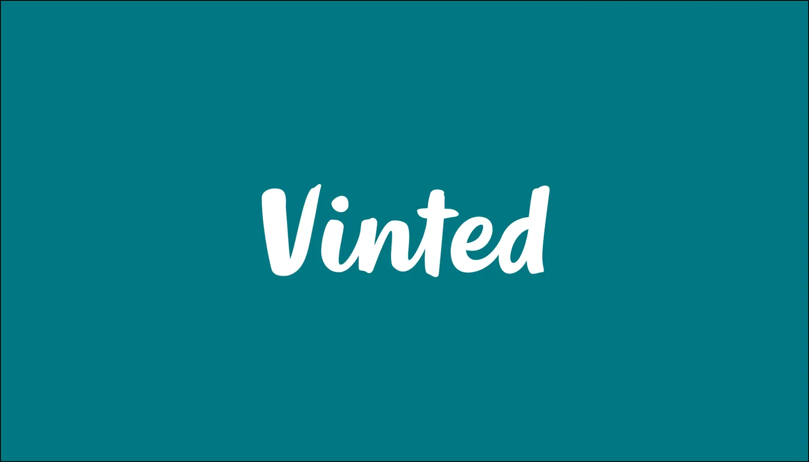

Automatisation
Bot Vinted
Ce projet consiste en un script d'automatisation développé en Python. Il permet de surveiller en temps réel les nouvelles annonces sur la plateforme Vinted selon des critères précis (marque, prix, état) et d'envoyer une notification instantanée (via Discord ou Telegram) pour saisir les meilleures affaires.
Technologies utilisées
Python
API Rest
Scraping
JSON
Fichiers du projet
Voici les principaux fichiers sources constituant le bot :
Visuels
